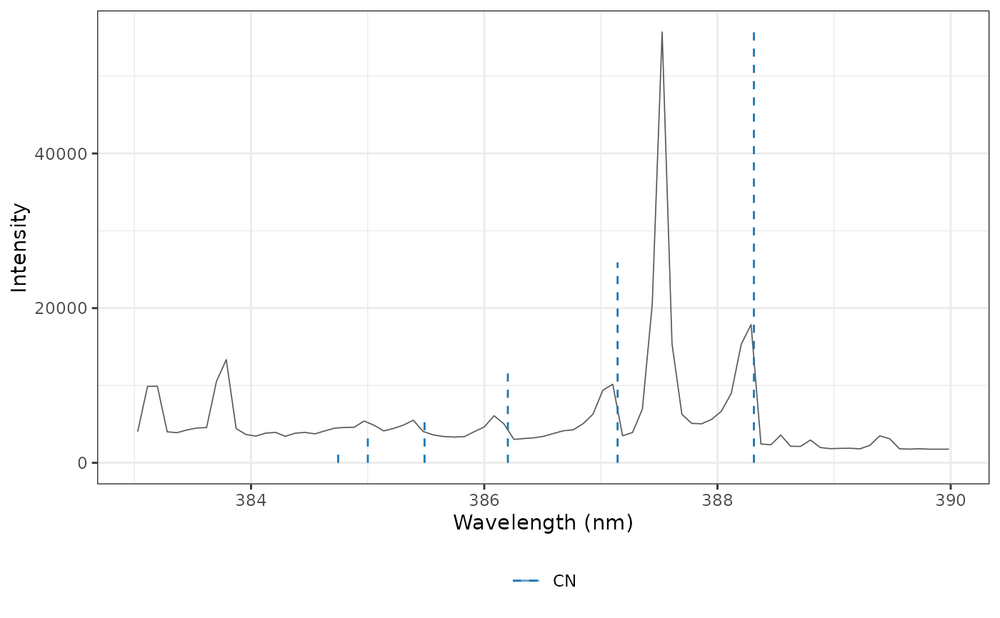

Lists the band heads of the electronic systems of diatomic molecules that emit in laser-induced plasmas, with their Franck-Condon factors and relative intensities at a vibrational temperature, to identify the molecular bands of a spectrum: CN, C2, CH, OH, NH, N2, N2+, NO, CO, AlO, CaF, CaCl, SrF, SrCl, MgO, TiO, BO and SiO. The bands are computed from spectroscopic constants included in specProc, without a download.
Usage
molecular_bands(
molecule = NULL,
wavelength = c(200, 900),
temperature = 5000,
min_relative = 0.01
)Arguments
- molecule
A character vector of molecules, such as
c("CN", "C2"), orNULL(default) for all of them.- wavelength
A numeric vector of length 2: the wavelength range, in nm. Default is 200 to 900 nm.
- temperature
The vibrational temperature, in K, for the relative intensities and the formation of the heads. Default is 5000.
- min_relative
The minimum relative intensity of the bands kept, between 0 and 1. Default is 0.01.
Value
A tibble with one row per band, sorted by wavelength:
molecule, system (such as "B-X"), its name, the upper and
lower electronic states, the vibrational quantum numbers v_upper and
v_lower, the wavelength of the head (nm), the origin of the band
(nm), the direction in which the band is degraded ("red" or
"violet"), whether it has a head, the Franck-Condon factor fcf and
the relative_intensity.
Details
The origin of the band from the vibrational level \(v'\) of the upper
state to \(v''\) of the lower state is
$$\nu_0 = \nu_{00} + G'(v') - G'(0) - G''(v'') + G''(0)$$
with the measured origin \(\nu_{00}\) of the 0-0 band and the
vibrational terms
\(G(v) = \omega_e (v + 1/2) - \omega_e x_e (v + 1/2)^2 + \omega_e y_e (v + 1/2)^3\).
The head is where the P or R branch turns back,
$$\nu_{head} = \nu_0 - \frac{(B_{v'} + B_{v''})^2}{4 (B_{v'} - B_{v''})}$$
with the rotational constants \(B_v = B_e - \alpha_e (v + 1/2)\). A band
is degraded to the red when \(B_{v'} < B_{v''}\) (its head is on the
violet side) and to the violet otherwise. When the head would form at a
rotational level above twice the most populated one at temperature, as
in the bands of hydrides such as CH and NH, the band has no head: its
strongest feature is the Q branch near the origin, and wavelength is
the origin. The spin-orbit components of \(\Pi\), \(\Delta\) and
\(\Phi\) states are separate sub-bands when their origins are known;
other fine structure is ignored.
The Franck-Condon factor \(q_{v'v''}\) is the squared overlap of the vibrational wavefunctions of Morse potentials (harmonic when the anharmonicity is not known). The relative intensity of a band is $$I \propto q_{v'v''}\, \nu^4 \exp\left(-\frac{hc\,[G'(v') - G'(0)]}{k_B T}\right)$$ (in energy units, with a constant electronic transition moment), normalized to the strongest band of each system. Intensities of different systems or molecules are not comparable: that would need their transition moments and the populations of their upper states. When the rotational constants of a state are not known, only the bands with \(v' = v''\) are listed, without Franck-Condon factor or head.
The heads agree with measured heads to about 0.05 nm for well-studied
systems, such as the CN violet, C2 Swan, N2 second positive, N2+ first
negative and AlO B-X systems. They are less accurate for bands of high
\(v\), perturbed states and hydrides, whose rotational structure is
open. molecular_spectrum() simulates the rotational structure of the
bands from a line list.
The constants are those compiled by Huber and Herzberg (1979), from the
NIST Chemistry WebBook. Wavelengths are in air between 200 and 2000 nm
and in vacuum outside this range, as in nist_lines().
References
Huber, K.P., Herzberg, G. (1979). Molecular Spectra and Molecular Structure IV. Constants of Diatomic Molecules. Van Nostrand Reinhold, New York. Data from the NIST Chemistry WebBook, NIST Standard Reference Database 69, https://webbook.nist.gov/chemistry/.
Herzberg, G. (1950). Molecular Spectra and Molecular Structure I. Spectra of Diatomic Molecules, 2nd edition. Van Nostrand, Princeton.
See also
plot_lines() and line_finder() to mark the bands on a
spectrum, molecular_spectrum(), libs_lines()
Examples
# the CN violet and C2 Swan bands
molecular_bands(c("CN", "C2"), wavelength = c(380, 520), min_relative = 0.05)
#> # A tibble: 23 × 13
#> molecule system name upper lower v_upper v_lower wavelength origin degraded
#> <chr> <chr> <chr> <chr> <chr> <int> <int> <dbl> <dbl> <chr>
#> 1 C2 C-A Desla… C 1P… A 1P… 1 1 382. 382. violet
#> 2 CN B-X viole… B 2S… X 2S… 4 4 385. 384. violet
#> 3 C2 C-A Desla… C 1P… A 1P… 0 0 385. 385. violet
#> 4 CN B-X viole… B 2S… X 2S… 3 3 385. 385. violet
#> 5 CN B-X viole… B 2S… X 2S… 2 2 386. 385. violet
#> 6 CN B-X viole… B 2S… X 2S… 1 1 387. 386. violet
#> 7 CN B-X viole… B 2S… X 2S… 0 0 388. 388. violet
#> 8 C2 C-A Desla… C 1P… A 1P… 2 3 403. 403. violet
#> 9 C2 C-A Desla… C 1P… A 1P… 1 2 407. 406. violet
#> 10 C2 C-A Desla… C 1P… A 1P… 0 1 410. 410. violet
#> # ℹ 13 more rows
#> # ℹ 3 more variables: head <lgl>, fcf <dbl>, relative_intensity <dbl>
# the CN bands in the mean spectrum of the forage samples
data(forageLIBS)
spectrum <- colMeans(forageLIBS[-(1:14)])
wl <- as.numeric(names(spectrum))
plot_lines(spectrum[wl > 383 & wl < 390], bands = molecular_bands("CN"),
interactive = FALSE)
